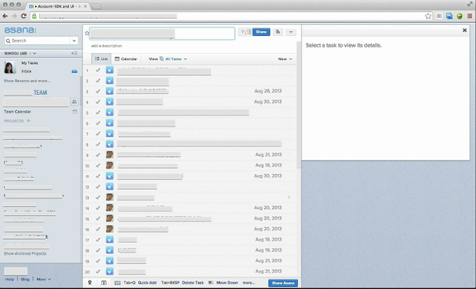
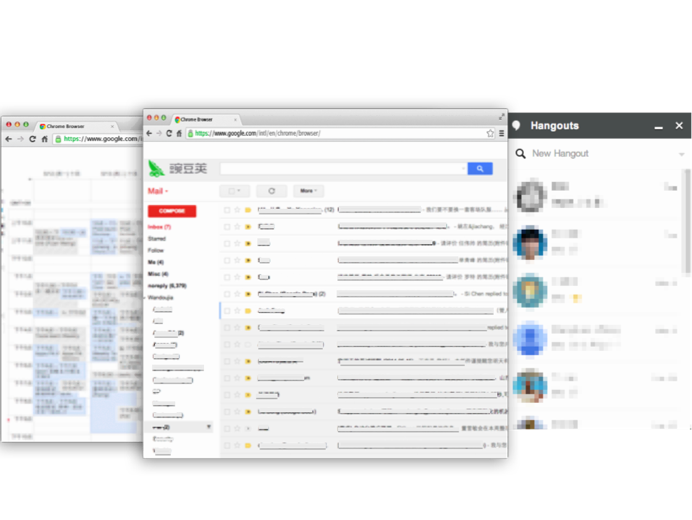
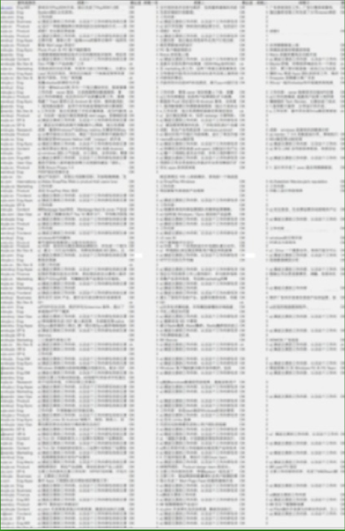
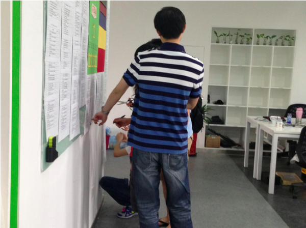
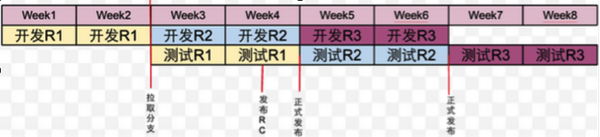
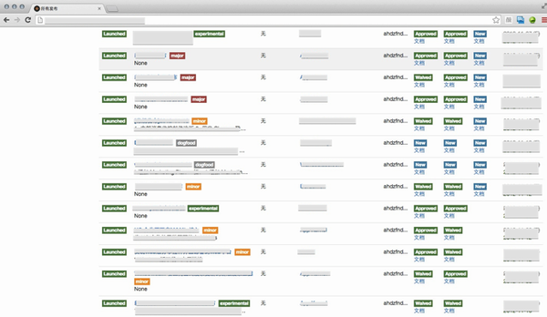

虎嗅注：阿里、腾讯以及一些创业公司是如何进行研发管理和绩效考核的？在知乎上，这个问题得到了超过 5000 位网友的关注，显然，BAT 获得的巨大成功使得巨头们的管理模式成为了人们好奇的焦点。豌豆荚创始团队成员丁吉昌这个问题下做了一个豌豆荚研发管理的详细分享。本文已获作者授权。
首先，画一下我们通常讲研发管理的范畴：确定如何立项，如何确定产品目标，如何把控项目进度，如何驱动产品一代代完善以及如何调动团队积极性等。
在时间周期上来说，我们归纳为 5 个关键步骤：选方向、定目标、控进度、带团队和排干扰。相配套的，则是在这五个关键步骤的一些流程和工具的使用。
【一】高效研发的 5 个关键步骤
第一步：立项——定方向
在豌豆荚的整个研发过程中，立项称为 ProductBrief 或者 Project Brief。团队的产品经理会撰写一个1－2 页的文档，然后和执行团队进行评审，如果评审通过，立项就成功了。文档一般包含会包含以下内容：
1. 愿景：一句话表达清楚要做什么；
2. 分析市场机会和趋势，决定当前策略；
3. 确定目标用户的特征和核心需求；
4. 现存的解决方案和各自的优劣势；
5. 该项目对豌豆荚的利益点；如果不做该项目，哪些竞争对手会做，对竞争对手的利益点；
6. 需要哪些技术的支持和驱动，哪些技术是豌豆荚的弱项；
7. 人力需求；
8. 项目的紧急程度，是否需要快速推进；
9. 发布策略；
10. 核心衡量指标，用来衡量成功的指标。
第二步，OKR 体系——定目标
对一个项目来说，设定目标是非常重要的，因为这决定了如何去做，以及能做到何种程度。豌豆荚采纳的目标管理是从 Google 引进的 OKR 体系（Objectives& Key Results，目标与关键成果），这跟传统的 KPI（Key Performance Indicator，关键绩效考核）稍微有些区别：
1. OKR 首先是沟通工具：豌豆荚共有 300 多人，每个人都要写 OKR。为了便于沟通，所有这些 OKR 都会放在一个文档里。任何员工都可以看到 CEO 的这个季度最重要的目标是什么，HR 团队这个季度的目标是什么。
2. OKR 是努力的方向和目标：OKR 代表你到底要去哪里，而不是你要去的地方具体在哪里。
3. OKR 必须可量化。比如健身时设定锻炼目标，如果只是定义成「我们要努力提高身体素质」，肯定不是一个好的 OKR，因为无法衡量，好的 OKR 是「今年的跑步时间较去年增加一倍」。
4. 目标必须一致：制定者和执行者目标一致、团队和个人的目标一致。首先，制定公司的 OKR；其次，每个团队定自己的 OKR；第三，每个工程师或设计师写各自的 OKR。这三步各自独立完成，然后对照协调这三者的 OKR。在豌豆荚，OKR 跟个人绩效没有关系，因为 OKR 系统的结果和每个人并不直接挂钩。
5. 通过月度会议 Review ，时时跟进 OKR： 在月度会议上需要确定如何去达到目标，是一个帮助达到目标的过程。
6. 通过季度会议 Review ，及时调整 OKR：互联网的变化非常快，所以豌豆荚每季度有一个 OKR 的 review，调整的原则是目标（Objectives）不变，只允许调整关键成果（Key Results）。
为了更好的理解如何制定 OKR 体系，我们看个例子：
- 目标（Objectives）：发布有影响力的新功能，将 XXX 产品做成用户可以每日使用的产品。
- 关键成果（Key Results）：
- 日活跃用户量为 XX；
- 使用 XX 方式，提高 XXX 核心指标；
第三步，项目管理——控进度：
目标设定以后，非常重要的就是执行，一般的项目管理实际上就是控制进度。
1、任务/进度勤同步。整个公司所有人的 calender，包括会议、要做的事情、项目的时间节点都需要及时同步。在整个战略布局上，如果某个项目工期非常紧，就必须进行更多的沟通，确保每一个环节都没有问题。

2、站立会议 (Daily Sync)：每天进行站立会议，一般控制在十分钟之内，每个人说明自己今天要做的工作，需要什么帮助，有谁可以帮忙，可以更有效的调节资源和公关。

3、多方位沟通（Google Docs / Gmail / Hangouts）：对非紧急的事情，两个团队或者是两个人一起讨论所有的设计。Hangouts 用于做快速响应。
4、周会（Weekly Report）：每周总结。豌豆荚的团队产品经理要做周报，汇报这周的工作、发布、取得效果以及数据。
5、数据系统：MUCE 是豌豆荚的数据系统，上面有全公司所有的产品数据和运营数据。MUCE 的数据能够用来验证产品的假设、方向等。
第四步，人员管理——带团队：
项目是由一个个具体的人来执行的，所以带团队非常重要，在人员管理上，豌豆荚有三个基本原则：
1、Re-Organization& 换组：公司鼓励员工换组，每个人都有机会到喜爱的团队做更有趣的事情。只要在原团队的绩效合格，每季度都可申请换团队或换工作内容。员工的绩效不与 OKR 挂钩，公司鼓励员工挑战难度、超越优秀，低 Level 的事情做不到优秀会被惩罚，做事不及格也会被惩罚。
2、One on One：在带人方面， One on One 非常重要。One on One 指的是每个团队的 manager 需要定期（最佳间隔是每周一次）与自己团队中的每个成员进行一对一讨论或者对话。在豌豆荚，manager 首先是一个教练，应该帮助自己团队的成员成长。通过 One on One，manager 需要了解每个团队成员现阶段的状态和遭遇的困扰，分享职业规划，帮助他们正确地处理问题，更好地实现个人成长。
3、个人 OKR 和 Performance 体系：每个员工在每个季度初需要确定自己本季度的 OKR，在一个季度结束后需要根据自己这个季度的工作完成情况给 OKR 打分。每半年公司会进行一次 Performance Review，主要是 review 员工过去半年的绩效，并根据 Performance Review 的结果变更 Job Ladder（业务职级）和薪酬。值得一提的是，在豌豆荚，所有的个人 Performance Review 的成就内容及级别都是全公司共享公开的，如下图所示。这个对于很多公司来说是不可想象的，豌豆荚为什么要这么做？因为一方面对于豌豆荚来说可以做到更为公平和透明，另一方面也给每位豌豆提供了更好学习和成长自己的样本，激励大家在产品研发中更高质量的挑战和要求自己。

第五步，兴趣管理——排干扰：
1、激发兴趣：HackDay，是豌豆荚一个特殊的节日，开始于 2010 年，类似黑客马拉松。通常在春节假期回来的那一周，产品设计师和工程师们 3-5 人组成一队，在连续 48 小时的时间里，充分展现工程团队的创意和想像力，完成一些比日常开发更 geek、更有趣的东西。
豌豆荚为了鼓励大家更好的完成挑战，也会设计一些特别有特色的奖品，历史上 2012 年提供的是苹果刚出 Macbook Retina，2013 年是 Google Glass，2014 年则是程序员最爱的 Herman Miller 顶级座椅。
在历史的 Hackday 中，有不少作品最终都成了重要产品对外发布，比如 MUCE、豌豆洗白白和 IAS（应用内搜索），都成为了豌豆荚极具特色的产品。
2、控制兴趣：PolishWeek，让公司慢下来，对已有产品的细节进行精细化的过程。在大量开发和新产品上线的过程中，我们会担心因为走得太快而对产品的细节关注不够。在连续 3 个工作周后，第 4 周通常是 PolishWeek。在 Polish Week 的这一周，豌豆荚内部不会进行新产品或新功能的开发，而主要是对现有的产品和服务进行打磨，解决一些细节问题和小 bug，譬如产品内一些字体的统一等等。平均每个 Polish Week 会解决产品中各种 Bug 大约 200 个。

【二】高效研发的流程和工具
过去几年豌豆荚做 Windows 版的时候，尝试过一个月、两个月、一个星期、两个星期的发布节奏，整个模式跟 Chrome 比较像，有功能发布就希望尽早的发。我们在服务端上每天都有更新，客户端会慢一点，现在大概是两周一个版本，如下图所示：

在开发节奏上，前两周的时间用于开发，然后截取分支准备发布，接下来两周进行测试，同时进行另一个开发，每一个迭代都控制在两周之内。相对而言，服务端的发布比较好操作，可以做很多的回归测试和自动化测试，不太需要手工的测试来做发布，但是 Windows 和 Android 都会有一些 Beta 的发布，在内部很难模拟用户的使用场景和用户的环境，所以在 release 之后的过程中一般会抽样 1%、5%、10% 这样一个节奏来做验证，主要是看某些指标是否达标。
这个流程刚开始执行的时候问题特别多。比如在这周开发完成以后，测试发现根本测试不了，有很多很多的 Bug，工程师只好利用第二个研发周期去修 Bug，然后又会影响第二周期的开发，这样问题越来越多，就会导致流程很难进行，然后进入恶性循环。为了解决这个问题，首先在操作层面上一开始先用一个月的迭代来让大家适应，同时要求 Master 分支必须是可用的（比如某人提交了代码跑不起来，或者没有经过测试，给其他同事带来了阻碍，就会被要求请全团队喝咖啡）。其次加强单元测试和回归测试，确保每个迭代的研发质量是可控的，后面的测试主要是回归和校验，减轻相互重叠的压力问题。一个月的迭代跑顺了之后，再跑到两周、一周的节奏，整体来看，差不多用了半年的时间，豌豆荚就完全跑顺了这个流程，想快可以快，想慢也可以慢。
工欲善其事必先利其器，为了提升产品研发效率，豌豆荚内部开发了一款项目管理工具 Wandoulabs。作为内部的沟通工具，它主要用来做跨团队沟通，全公司所有员工都会使用。重要的 roadmaps 必须在这里登记，登记了以后，一个项目需要多少设计师、需要多少 marketing、每个阶段是什么样以及工程师的发布状态都可以在这里看得到。

这就是前面提到的 Wandoulabs，大概逻辑如下：不同的标记分别代表研发状态、发布状态、负责的团队及这个事情的重要级别。
【三】对于重要的发布，豌豆荚有三个最基本的要求：
第一要获得 Product／Design Review 的批准。一个功能开发以后，无论是界面还是整个 UI，如果会影响到用户的操作，或者影响到商户的收入，比如我们的广告系统或者和合作伙伴的一些策略调整，这就需要做 Design Review。Design Review 在豌豆荚里面的时间大概是每周的周一、周三和周六，每次持续 1-2 个小时，包括 Product（Review）、Design（Review）或 Business（Review）。Product Design 指的就是 PD，主要的视觉设计师或产品设计师必须全员参加。
第二要获得 EngineeringTech Review 的批准。这更接近于传统上的技术设计，主要是看某个功能在工程设计上是怎么做的。做这个设计的团队和所有工程师必须全员参加，也会有一个人来 host，还需要几个指标的 review。这个过程是帮助相关的工程师把设计考虑更全面，包括流量、游戏的带宽压力的需求等等。
第三要获得 MarketingReview 的批准。主要是看产品上需要如何引入 marketing 团队的配合，需不需要做一些传播，需不需要注意公关策略等等。
同时对于更小的一些 Beta 测试则不强制要求。这些 Review 实际上是帮助整个团队、整个公司去理解当前最重要是什么，其实也是建立一个高标准的过程。